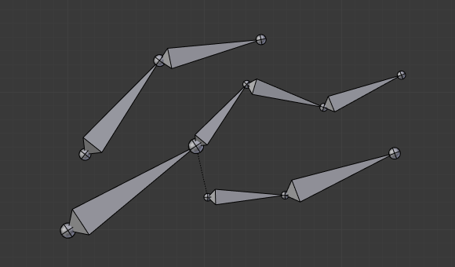
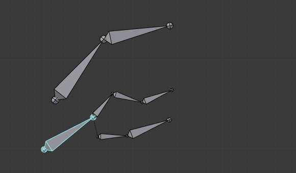
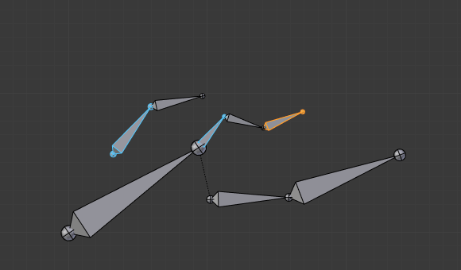

关系¶
参考
| 模式: | 所有模式 |
|---|---|
| 面板: |
在这个面板中，您可以安排骨骼在不同层，以便于操作。
Bone Layers 层¶
Moving bones between layers 在层之间移动骨骼¶
显然，你必须在 编辑模式 或 姿态模式 来移动层之间的骨骼。请注意，与物体一样，骨骼可以放置到几个层中，只需使用通常的 Shift-LMB 点击...首先，你必须选择所选定的骨骼！
- 在属性编辑器中，使用每个选定的骨骼关系面板（骨骼 标签）中的“图层按钮”来控制它所在的图层。
- 在 3D View 编辑器中，使用菜单 或 或按 M 显示弹出通常的图层菜单。请注意，这样，你可以将相同的图层分配给所有选定的骨骼。
Object Children 子物体¶
参考
| 模式: | 姿态模式 |
|---|
- Relative Parenting 相对父子关系
- Changes how transformation of the bone is applied to its child Objects.
Parenting 父子¶
- Parent 父级
- 数据ID 选择要设为父级的骨骼。
- Connected 相连项
- 相连项（Connected） 复选框设置要与其父级首端连接的骨骼。
Transformations 变换¶
骨骼关系对变换行为的影响。
默认情况下，子骨骼继承:
- 其父位置与自身的偏移量。
- 其父旋转的角度 （即他们保持恒定旋转相对于其父级）。
- 其父缩放，与自身偏移量。

骨架在它的重置位置。 |

首端骨的旋转。 |

首端骨骼的缩放。 |
{kind=link}
{kind=link}
就像标准的子对象。你可以 骨骼 标签的关系面板在前面的骨骼的基础上修改此行为:
- Inherit Rotation 继承旋转
- 禁用时，这将“破坏”与骨骼的父级的旋转关系。这意味着当它的父级旋转时，子级将在骨架对象空间中保持旋转。
- Inherit Scale 继承缩放
- 当被禁用时，这将“破坏”与骨骼的父级的缩放关系。
- Local Location
- When disabled, the location transform property is evaluated in the parent bone's local space, rather than using the bone's own rest pose local space orientation.
These inheriting behaviors propagate along the bones' hierarchy. So when you scale down a bone, all its descendants are by default scaled down accordingly. However, if you disable one bone's Inherit Scale or Inherit Rotation property in this "family", this will break the scaling propagation, i.e. this bone and all its descendants will no longer be affected when you scale one of its ancestors.

在骨架的黄色轮廓骨骼禁用继承旋转。 |

禁用继承旋转的骨骼子级骨骼的旋转。 |

禁用继承旋转的骨骼子级骨骼的缩放。 |
Connected bones have another specificity: they cannot be moved. Indeed, as their root must be at their parent's tip, if you do not move the parent, you cannot move the child's root, but only its tip, which leads to a child rotation. This is exactly what happens, when you press G with a connected bone selected, Blender automatically switches to rotation operation.
骨骼关系也对多个骨骼的选择在变换时的行为有重要的影响。然而，有许多不同的情况可能不包括在这个名单上，这应该给出一个好主意的问题：
通常，不相关的骨骼被独立转化。
When several bones of the same "family" are selected, only the "most parent" ones are really transformed -- the descendants are just handled through the parent relationship process, as if they were not selected (see Fig. 缩放其中一些相关骨骼。 the third tip bone, outlined in yellow, was only scaled down through the parent relationship, exactly as the unselected ones, even though it is selected and active. Otherwise, it should have been twice smaller!)
缩放其中一些相关骨骼。
When connected and unconnected bones are selected, and you start a move operation, only the unconnected bones are affected.
When a child connected hinge bone is in the selection, and the "most parent" selected one is connected, when you press G, nothing happens, because Blender remains in move operation, which of course has no effect on a connected bone.
{kind=link}
所以，当摆动一个骨骼链，你应该经常编辑它的元素从首端到尾端。这个过程被称为 正向运动学 （FK）。我们将在 later page Blender具有另一种姿态方法，称为 反向运动学 (IK),这可以让你通过移动其尾端来摆动整个链。
Note
This feature is somewhat extended/completed by the pose library tool.